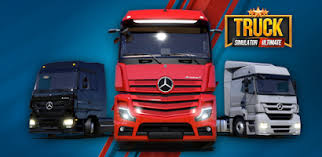
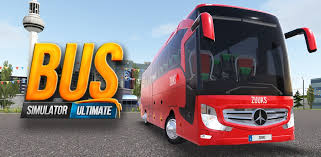

Quienes Somos
Alianza del Pacífico es una empresa 100% mexicana dentro del mundo de la simulación de transporte en videojuegos. Fundada el 20 de enero de 2025, se ha consolidado como un grupo apasionado por la conducción virtual en los populares juegos Bus Simulator Ultimate y Truck Simulator Ultimate. Nuestra comunidad está formada por jugadores comprometidos con la experiencia de simulación, donde buscamos ofrecer un ambiente de diversión, trabajo en equipo y realismo. Nos esforzamos por ser una de las mejores empresas dentro de estos simuladores, destacándonos por nuestra organización, profesionalismo y la pasión que ponemos en cada recorrido. En Alianza del Pacífico, valoramos el compañerismo y la competitividad sana, fomentando un espacio en el que cada miembro pueda mejorar sus habilidades, compartir experiencias y disfrutar al máximo del juego. Nuestra meta es crecer como equipo, expandir nuestra comunidad y seguir posicionándonos como una empresa líder dentro del mundo de la simulación de transporte virtual. Si eres amante de los simuladores de camiones y autobuses, ¡Alianza del Pacífico es el lugar ideal para ti! Súmate a nuestra empresa y vive la mejor experiencia en Bus Simulator Ultimate y Truck Simulator Ultimate.
 